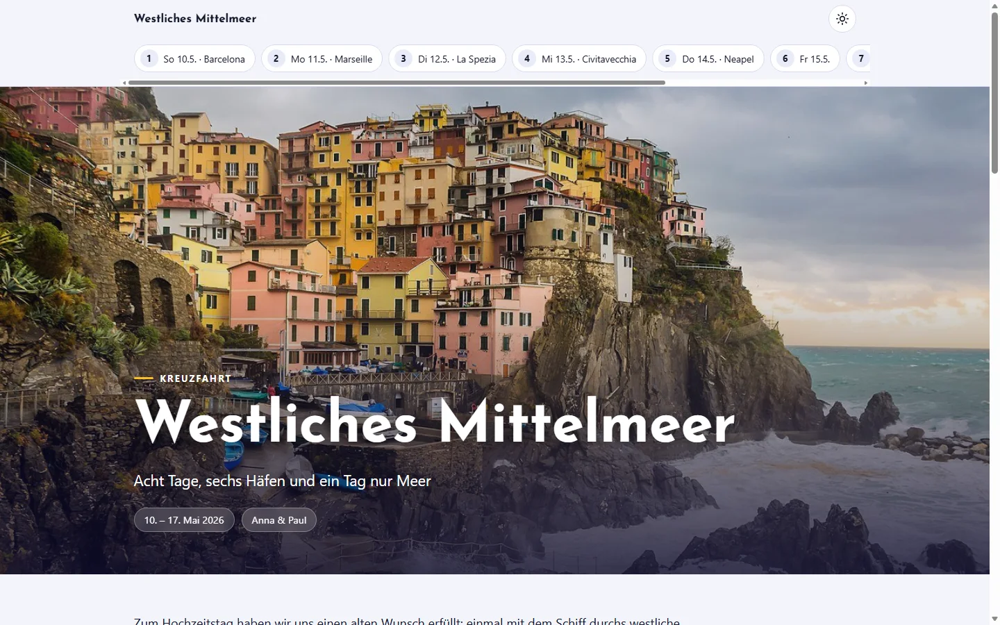
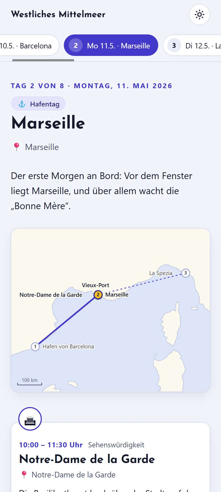
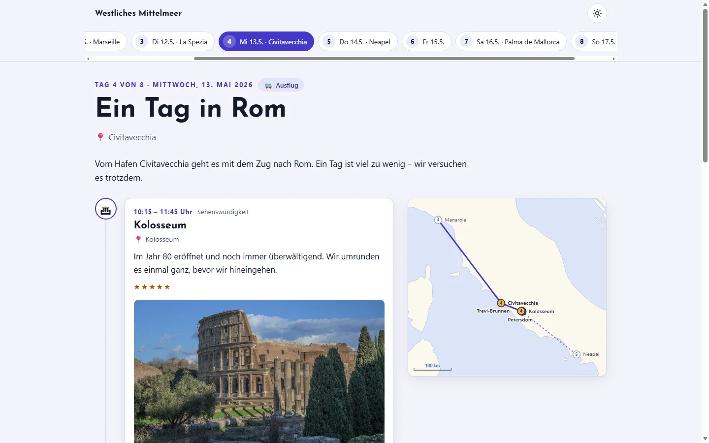
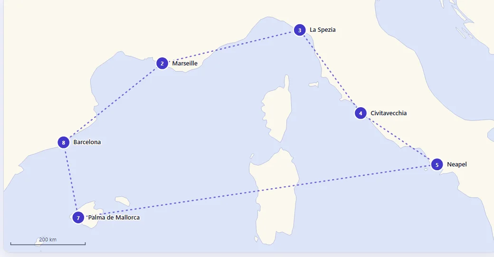
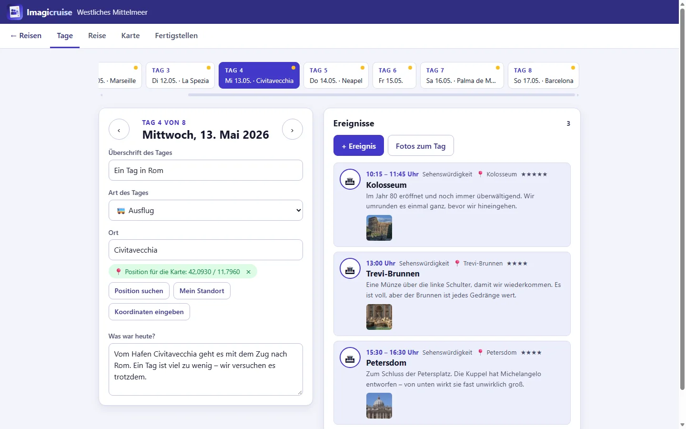
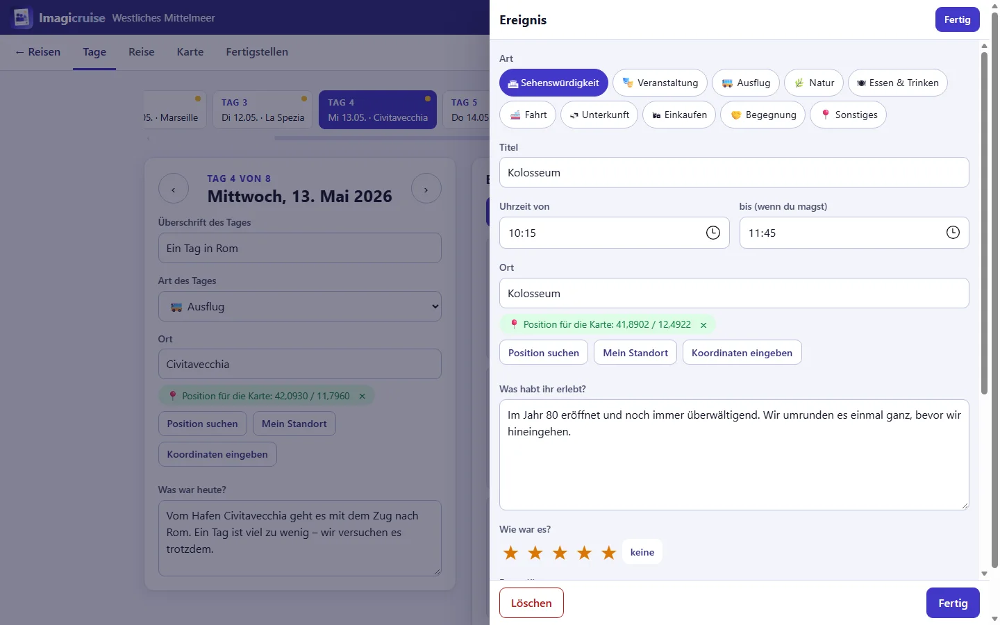
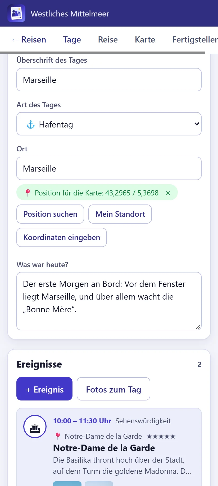

Jeder Tag hat seine Seite
Ihr gebt Titel und Zeitraum ein, und für jeden Tag der Reise steht eine Seite bereit. Dort sammelt ihr, was passiert ist – mit Uhrzeit, Ort, ein paar Sätzen und Fotos.
Reiseberichte, Tag für Tag
Imagicruise hält fest, was ihr unterwegs erlebt: für jeden Tag eine Seite, darauf jede Sehenswürdigkeit, jeder Ausflug, jedes Abendessen – mit Fotos und der Route auf der Karte. Am Ende steht ein Reisebericht, den ihr zeigen könnt.


Warum Imagicruise
Nach drei Wochen weiß niemand mehr, in welcher Stadt die schöne Kirche stand. Imagicruise ordnet die Reise so, wie ihr sie erlebt habt: Tag für Tag, Ereignis für Ereignis.
Ihr gebt Titel und Zeitraum ein, und für jeden Tag der Reise steht eine Seite bereit. Dort sammelt ihr, was passiert ist – mit Uhrzeit, Ort, ein paar Sätzen und Fotos.
Wählt alle Fotos der Reise auf einmal. Imagicruise legt sie nach dem Aufnahmedatum auf die Tage und bündelt sie zu Ereignissen. Uhrzeit und Ort kommen aus dem Foto.
Am Handy haltet ihr abends kurz fest, was war. Am PC arbeitet ihr die Reise später in Ruhe aus. Es ist dasselbe Programm, und beide Stände lassen sich zusammenführen.
Aus den Orten entsteht eine Karte mit eurer Route. Sie ist gezeichnet und gehört zum Reisebericht – kein Kartendienst schaut euren Lesern über die Schulter.
So sieht es aus
Die Bilder zeigen das echte Programm mit einer erfundenen Kreuzfahrt durchs westliche Mittelmeer. Den ganzen Bericht könnt ihr hier selbst durchblättern.





Die Beispielfotos sind frei lizenzierte Aufnahmen aus Wikimedia Commons, siehe Bildnachweis.
Funktionen
Von der ersten Notiz am Abend bis zur fertigen Seite für Familie und Freunde.
Jeder Tag bekommt Überschrift, Ort und ein paar Sätze. Jedes Ereignis hat eine Art – Sehenswürdigkeit, Veranstaltung, Ausflug, Essen und mehr –, dazu Uhrzeit, Ort, Text, Sterne und Fotos mit Bildtext. Fotos lassen sich drehen, zuschneiden und aufhellen, kurze Videos kürzen; Texte könnt ihr diktieren. Für Kreuzfahrten gibt es Hafentage und Seetage.
Küstenlinien und Route werden gezeichnet. Das funktioniert auch ohne Netz.
Ein Reisepaket nimmt die ganze Reise samt Fotos mit auf das andere Gerät. Dort werden beide Stände zusammengeführt: Was ihr am Handy geschrieben und am PC verbessert habt, bleibt beides erhalten.
Auf dem Schiff, im Gebirge, im Ausland: Die App auf dem Handy braucht nach dem ersten Öffnen kein Internet. Gespeichert wird von selbst.
Jederzeit seht ihr, wie der Bericht aussehen wird. Die Prüfliste sagt, was noch fehlt: ein Tag ohne Eintrag, ein Ereignis ohne Titel, ein Ort ohne Position.
Der fertige Reisebericht ist ein Ordner mit einer kleinen Webseite. Ihr legt ihn auf einen Webspace eurer Wahl oder öffnet ihn einfach per Doppelklick.
Im Programm lässt sich die Beispielreise laden. So seht ihr sofort, wie eine ausgefüllte Reise aussieht, und könnt alles gefahrlos ausprobieren.
So geht’s
Titel, Art der Reise, erster und letzter Tag. Mehr braucht es nicht: Für jeden Tag steht sofort eine Seite bereit.
Unterwegs am Handy ein Ereignis nach dem anderen – oder zu Hause alle Fotos auf einmal einlesen und nur noch Titel und Text ergänzen.
Vorschau ansehen, Prüfliste durchgehen, Reisebericht erzeugen. Der Ordner kommt auf euren Webspace oder direkt zu Familie und Freunden.
Datenschutz
Imagicruise ist kein Online-Dienst. Reisen und Fotos liegen auf eurem Gerät, und ihr entscheidet, was ihr wem zeigt. Die Einzelheiten stehen im Datenschutzhinweis zum Programm.
Auf dem Handy nehmt ihr am besten die Android-App. Sie liest den Aufnahmeort eurer Fotos, damit Orte und Route sich fast von selbst ergeben. Im Play Store gibt es sie noch nicht: Ihr ladet sie als Datei von dieser Seite und installiert sie selbst.
Ohne Datei geht es auch als Web-App in Chrome, am Handy oder am PC: „Web-App öffnen“ antippen, am Handy dann im Menü ⋮ „App installieren“ wählen. Sie aktualisiert sich von selbst und läuft auch ohne Netz, kann den Aufnahmeort der Fotos aber nicht lesen.
App und Web-App werden über GitHub Pages ausgeliefert. Was sie mit Daten macht: Datenschutz im Programm. Das Studio für den PC, das Reisen als Ordner auf der Festplatte ablegt, gibt es in der Beta noch nicht als Installationsprogramm.
Fragen
Nein. Du öffnest Imagicruise und legst los. Es gibt keine Anmeldung und kein Benutzerkonto.
Auf deinem eigenen Gerät: am Handy im Speicher des Browsers, am PC in einem Ordner. Imagicruise überträgt nichts an uns.
Über ein Reisepaket: eine Datei mit der ganzen Reise samt Fotos. Du speicherst sie auf dem einen Gerät und liest sie auf dem anderen ein. Imagicruise führt beide Stände zusammen, für jeden Tag und jedes Ereignis gilt der neuere.
Ja. Nach dem ersten Öffnen läuft die App auf dem Handy ohne Netz, zum Beispiel auf dem Schiff. Nur die Ortssuche, die Infos zum Ort aus der Wikipedia und das Diktieren brauchen Internet; die Position lässt sich auch aus dem Foto, über den Standort oder als Koordinaten übernehmen.
Nur wer die Adresse kennt, unter der du ihn selbst ins Internet stellst. In der Beta gibt es noch kein Passwort; der Bericht bittet Suchmaschinen, ihn nicht aufzunehmen. Du kannst ihn auch nur als Ordner weitergeben oder auf dem eigenen Gerät ansehen.
Nein. Es passt für jede Reise: Rundreise, Städtereise, Wanderwoche, Strandurlaub. Für Kreuzfahrten gibt es zusätzlich Hafentage und Seetage.